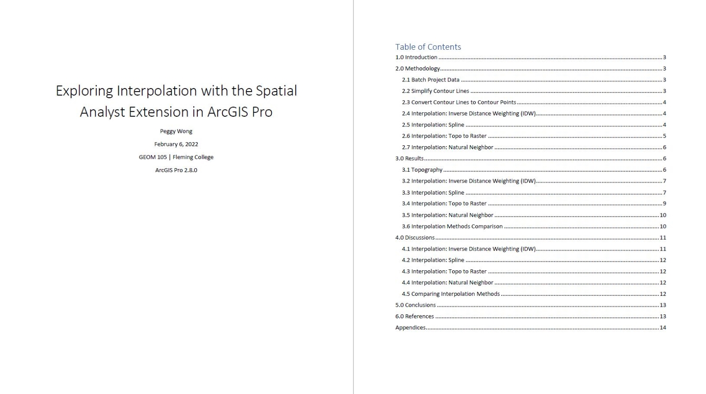

Wolf Corridor in Yellowstone National Park
The map displays the optimal route for gray wolves in Yellowstone National Park, United States, which was generated by Least Cost Path Analysis. The cost surfaces, which were generated based on the pre-defined weighted criteria (land cover, slope, distance to human, distance to water, road and trail density), were combined into an accumulated cost surface. The cost distance and the cost direction were then generated to identify the least cost path based on the pre-defined origin and destination. Based on the results, the accumulated cost surface indicates that the majority of Yellowstone National Park is suitable for gray wolves habitat (79%), while 12% of the area is constrained, 3% of the area is highly constrained, and 6% of the area is unsuitable. The optimal wolf corridor is 162.21km long, running from Mammoth, Wyoming in the north, to Badger Creek, Wyoming, in the south.
Earthquake Risk Assessment of Yokohama, Japan
The map displays the low risk and high risk areas in Yokohama, Japan, in the event of a catastrophic earthquake. MCDA (Multi-Criteria Decision Analysis) was conducted based on the pre-defined criteria (population density, soil type, distance to disaster base hospital, distance to fire station, distance to evacuation shelter, maximum tsunami inundation depth based on the government's prediction). The risk surfaces for each criterion were generated, and the weightings for each criterion were determined using AHP (Analytical Hierarchy Process). The final risk surface was then generated using the Weighted Overlay tool in ArcGIS Pro. Based on the results, Yokohama is generally safe in the event of an earthquake. 92% of the area (401.55km2) is classified as low risk or moderate risk, and only 8% of the area (34.71 km2) is classified as high risk. These relatively high risk areas are concentrated in the eastern area of Yokohama.
Exploring Interpolation with the Spatial Analyst Extension in ArcGIS Pro
The report compares different spatial interpolation methods that are available in ArcGIS Pro. DEMs (digital elevation models) were generated for each spatial interpolation method (Inverse Distance Weighting, Spline, Topo to Raster, Natural Neighbor). Based on the results, all spatial interpolation methods estimate the unknown values fairly accurately. The Topo to Raster interpolation had the best performance in estimating unknown values based on collected sample data. However, the Natural Neighbor interpolation was the most efficient method for users who do not have much knowledge about interpolation and want to generate interpolated surfaces quickly. Each interpolation method has their own advantages and disadvantages, and users should choose an interpolation method based on their research purposes and context.
Ski Resort Site Suitability Analysis
The map displays the optimal ski resort locations in Peterborough, Ontario. Since the Topo to Raster interpolation had the best performance in estimating unknown values in the Peterborough area (see Exploring Interpolation with the Spatial Analyst Extension in ArcGIS Pro), it was used to generate a 20m DEM. The interpolated DEM was then used to derive the slope and the aspect of the study area. Based on the pre-defined criteria (slope, aspect), the study area was classified into "suitable" and "not suitable" using the Raster Calculator tool and the Reclassify tool in ArcGIS Pro. Based on the results, the area of the optimal ski resort locations for Green Circle (beginner) is 17.44 km2, whereas the area of the optimal ski resort locations for Blue Square (intermediate) is 0.02km2 only. Since the Peterborough area does not have significant mountainous terrain, people may have to look for other areas if they are interested in developing ski resorts for intermediate or advanced skiers.